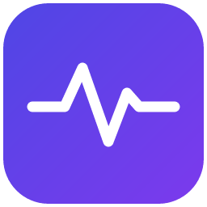

Connexion au serveur
Choisissez l’application utilisée par ce poste.
Les données restent sur le serveur choisi. Vos identifiants ne sont pas copiés vers un autre serveur.

Choisissez l’application utilisée par ce poste.
Les données restent sur le serveur choisi. Vos identifiants ne sont pas copiés vers un autre serveur.